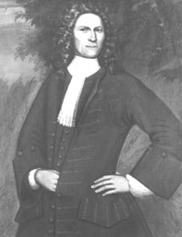

|
by Stefan Bielinski Rutger Janse was born in Albany in 1675 - the son of blacksmith-turned-trader Jan Janse and his wife Margarita Van Woert Bleecker. He followed his father and brothers in the fur trade - an ambition that often took him beyond Albany and into the Indian country. Settling in Albany by 1712, at age thirty-seven he married Catharina Schuyler - the thirty-four-year-old widow of Mayor Johannes Abeel. Already the mother of six, she gave birth to four Bleecker children between 1713 and 1720. This middle-aged couple lived in her house on Market Street where they soon became Albany mainstays. In 1714, he became a deacon of the Albany Dutch church where he and his wife were frequent baptism sponsors. Settling in to the Albany end of an extensive family-based peacetime trading network, Rutger Janse became quite wealthy. With wealth came civic responsibility. He was appointed city recorder in 1725 and mayor of Albany in 1726. He held the mayoralty until 1729. Over the next decade, he was commissioned as one of the Albany Commissioners of Indian Affairs. After 1740, he retired to his riverside home. Rutger Janse Bleecker wrote a will in January of 1756 which stated he was "of frail body." He mentioned his dead wife, Catharina, and three surviving children. His estate included personal and real property as well as the lands left by his brother Nicholas. He died that summer and was buried under the Albany church on August 5, 1756. He was eighty-one years old. Two of Rutger Janse's children, John R. and Margarita, became prominent Albany residents.
This portrait is attributed to Nehemiah Partridge and is in the collections of the Albany Institute of History and Art. first posted: 8/3/00; last revised 3/18/02 |